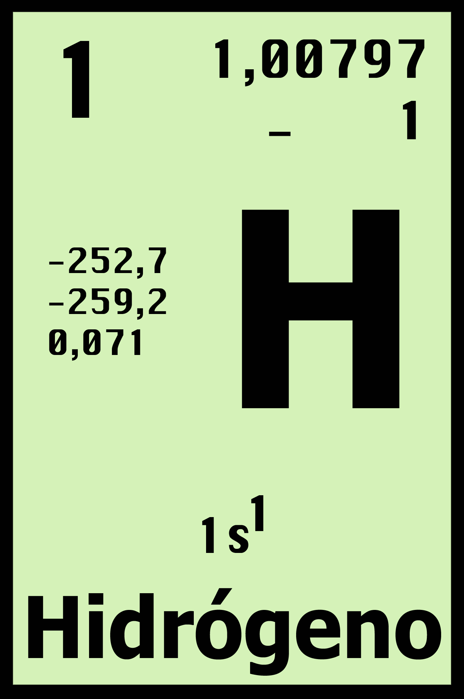
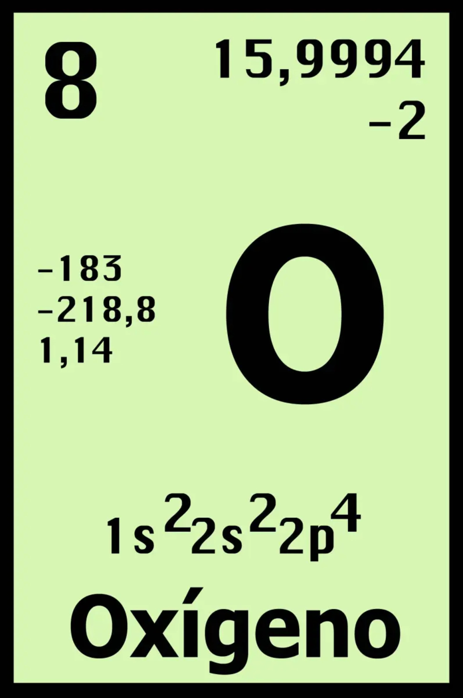
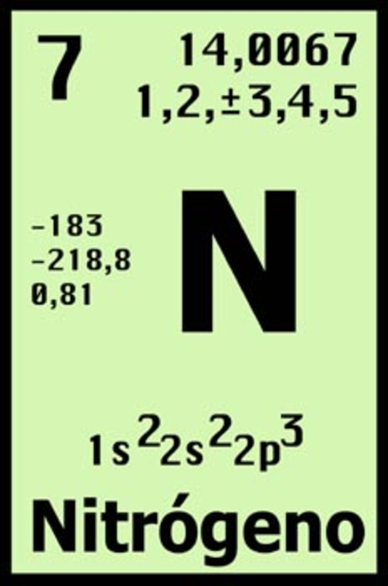

1. Hidrógeno
El hidrógeno es el primer elemento de la tabla periódica. Es el elemento químico más ligero que existe, su átomo está formado por un protón y un electrón y es estable en forma de molécula diatómica (H2). En condiciones normales se encuentra en estado gaseoso, y es insípido, incoloro e inodoro.

2. Oxigeno
El oxígeno es un elemento químico de la Tabla Periódica que se representa con el símbolo O. Es el elemento más abundante en la Tierra y el más abundante del universo, después del helio (He) y el hidrógeno (H). Tiene número atómico 8 y masa atómica 15.9994 uma.

3. Nitrógeno
El nitrógeno es un elemento químico de número atómico 7, lo que significa que cada átomo de Nitrógeno cuenta con 7 protones en su núcleo atómico. Se representa con el símbolo N y se encuentra en el grupo 15 y el periodo 2 de la tabla periódica, por lo que pertenece al grupo de los no metales.